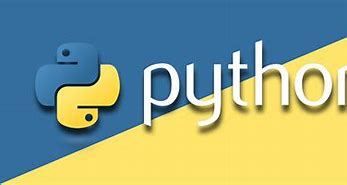

A programming language is a formal language comprising a set of strings that produce various kinds of machine code output. Programming languages are one kind of computer language, and are used in computer programming to implement algorithms. Most programming languages consist of instructions for computers. There are programmable machines that use a set of specific instructions, rather than general programming languages. Since the early 1800s, programs have been used to direct the behavior of machines such as Jacquard looms, music boxes and player pianos.[1] The programs for these machines (such as a player piano's scrolls) did not produce different behavior in response to different inputs or conditions.Thousands of different programming languages have been created, and more are being created every year. Many programming languages are written in an imperative form (i.e., as a sequence of operations to perform) while other languages use the declarative form (i.e. the desired result is specified, not how to achieve it).
Python is an interpreted high-level general-purpose programming language. Its design philosophy emphasizes code readability with its use of significant indentation. Its language constructs as well as its object-oriented approach aim to help programmers write clear, logical code for small and large-scale projects.[31] Python is dynamically-typed and garbage-collected. It supports multiple programming paradigms, including structured (particularly, procedural), object-oriented and functional programming. It is often described as a "batteries included" language due to its comprehensive standard library.[32]began working on Python in the late 1980s, as a successor to the ABC programming language, and first released it in 1991 as Python 0.9.0.[33] Python 2.0 was released in 2000 and introduced new features, such as list comprehensions and a cycle-detecting garbage collection system (in addition to reference counting). Python 3.0 was released in 2008 and was a major revision of the language that is not completely backward-compatible. Python 2 was discontinued with version 2.7.18 in 2020.[34]
PHP is a general-purpose scripting language geared towards web development.[7] It was originally created by Danish-Canadian programmer Rasmus Lerdorf in 1994.[8] The PHP reference implementation is now produced by The PHP Group.[9] PHP originally stood for Personal Home Page,[8] but it now stands for the recursive initialism PHP: Hypertext Preprocessor.[10] PHP code is usually processed on a web server by a PHP interpreter implemented as a module, a daemon or as a Common Gateway Interface (CGI) executable. On a web server, the result of the interpreted and executed PHP code – which may be any type of data, such as generated HTML or binary image data – would form the whole or part of an HTTP response. Various web template systems, web content management systems, and web frameworks exist which can be employed to orchestrate or facilitate the generation of that response. Additionally, PHP can be used for many programming tasks outside the web context, such as standalone graphical applications[11] and robotic drone control.[12] PHP code can also be directly executed from the command line.

Java is a high-level, class-based, object-oriented programming language that is designed to have as few implementation dependencies as possible. It is a general-purpose programming language intended to let programmers write once, run anywhere (WORA),[17] meaning that compiled Java code can run on all platforms that support Java without the need for recompilation.[18] Java applications are typically compiled to bytecode that can run on any Java virtual machine (JVM) regardless of the underlying computer architecture. The syntax of Java is similar to C and C++, but has fewer low-level facilities than either of them. The Java runtime provides dynamic capabilities (such as reflection and runtime code modification) that are typically not available in traditional compiled languages. As of 2019, Java was one of the most popular programming languages in use according to GitHub,[19][20] particularly for client–server web applications, with a reported 9 million developers.[21]
 top
top